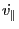

The distribution function is constant along the trajectory of the guiding
center in phase space, i.e.,
We consider the case that the distribution function is independent of
, i.e.,
. Then Eq.
(76) is written as
(which is equation (15) in Porcelli's paper) where the guiding center orbits,
,
, and  , are given by Eqs.
(66), (27), and (32), i.e.,
, are given by Eqs.
(66), (27), and (32), i.e.,
and
We note that, besides the independent variables
 , the right-hand side of the Eqs. (78),
(79), and (80) depends on the electromagnetic field.
Note that, in the perturbation theory, only the electromagnetic field can be
perturbed, the independent variables (variables used as the phase space
coordinates) are kept fixed.
, the right-hand side of the Eqs. (78),
(79), and (80) depends on the electromagnetic field.
Note that, in the perturbation theory, only the electromagnetic field can be
perturbed, the independent variables (variables used as the phase space
coordinates) are kept fixed.
Subsections
YouJun Hu
2014-05-19